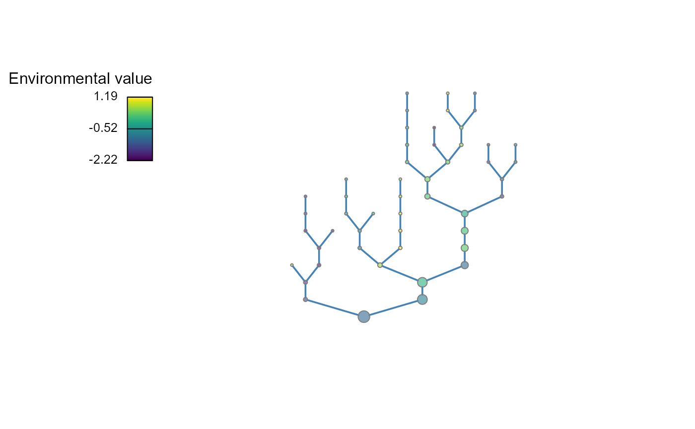
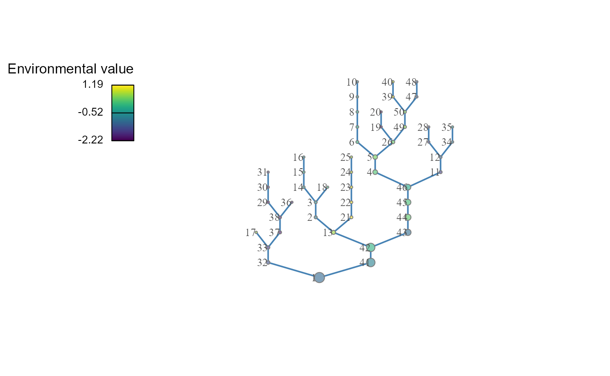
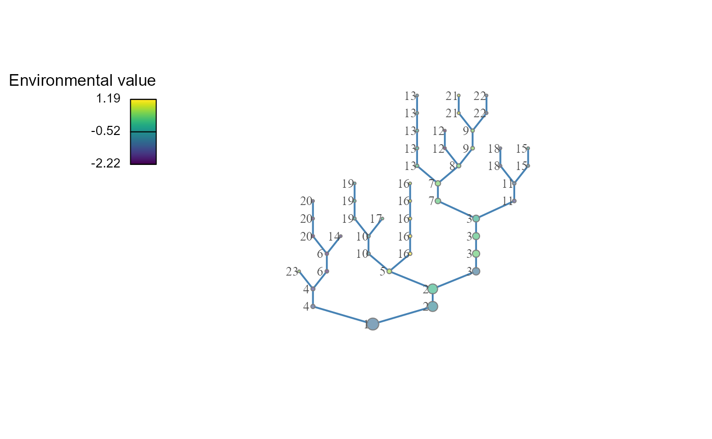
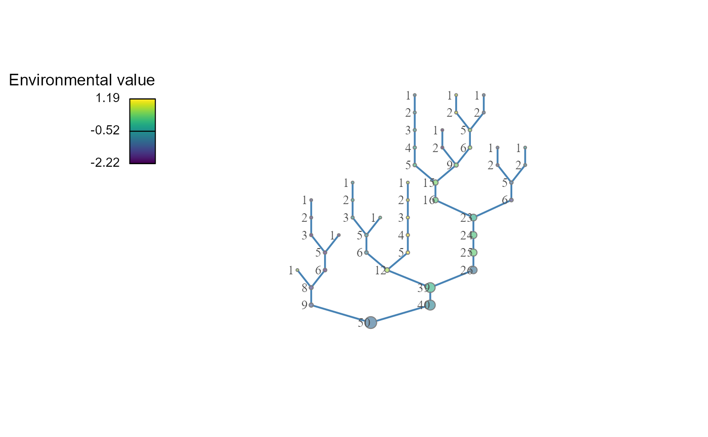
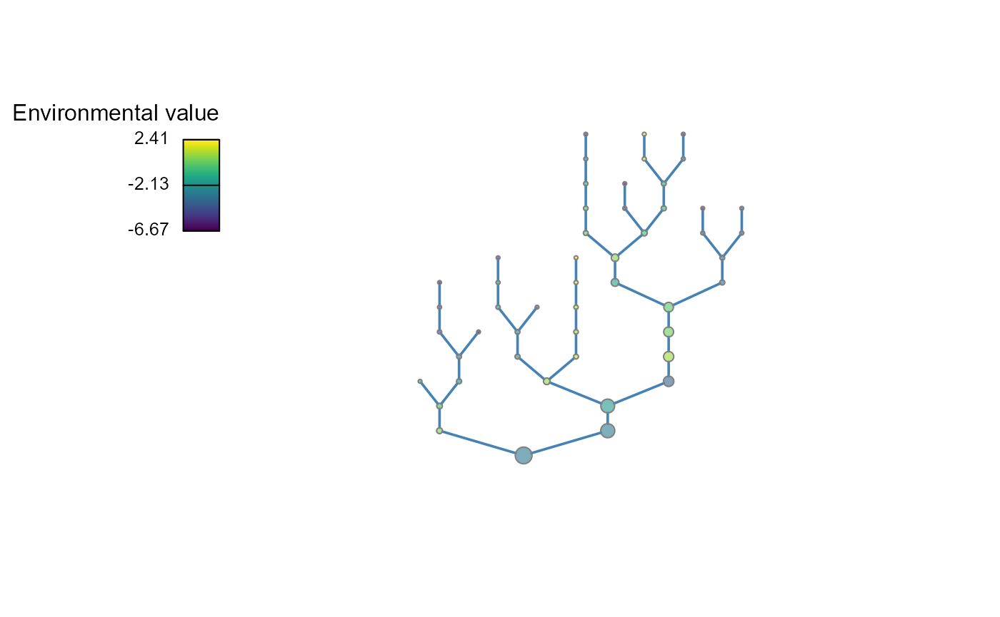
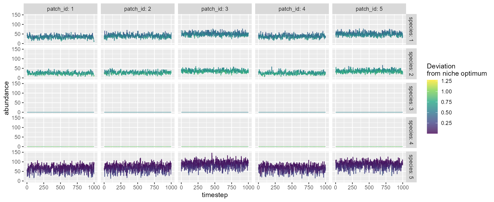
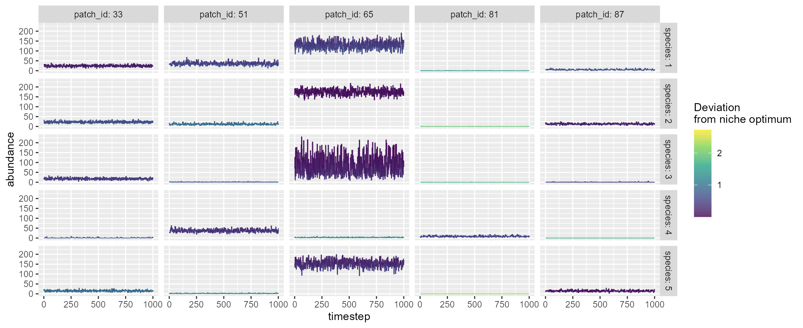

mcbrnet
vignette-mcbrnet.Rmd
brnet() : network generation
Basic usage
This function generates a random branching network with the specified
number of patches and the probability of branching. The key arguments
are the number of habitat patches (n_patch) and the
probability of branching (p_branch), which users must
specify. With these parameters, the function generates a branching
network through the following steps:
Draw the number of branches in the network. An individual branch is defined as a series of connected patches from one confluence (or outlet) to the next confluence upstream (or upstream terminal). The number of branches in a network \(N_{b}\) is drawn from a binomial distribution as \(N_{b} \sim Binomial(N,P_{b})\), where \(N\) is the number of patches and \(P_b\) is the branching probability.
Draw the number of patches in each branch. The number of patches in branch \(q\), \(n_q\), is drawn from a geometric distribution as \(n_{q} \sim Ge(P_b)\) but conditional on \(\sum_{q}^{N_{b}} n_q = N\).
Organize branches into a bifurcating branching network.
Sample script:
The function returns:
adjacency_matrix: adjacency matrix.distance_matrix: distance matrix. Distance between patches is measured as the number of steps required to reach from the focal patch to the target patch through the network.-
df_patch: a data frame (dplyr::tibble) containing patch attributes.- patch_id: patch ID.
- branch_id: branch ID.
- environment: environmental value at each patch (see below for details)
- disturbance: disturbance level (i.e., proportional mortality) at each patch (see below for details)
- n_patch_upstream: the number of upstream contributing patches (including the focal patch itself; akin to the watershed area in river networks).
Quick start
The following script produce a branching network with
n_patch = 50 and p_branch = 0.5. By default,
brnet() visualizes the generated network using functions in
packages igraph (Csardi and Nepusz 2006) and
plotfunctions (van Rij 2020) (plot = FALSE to
disable):

Randomly generated environmental values color patches and patches’ size is proportional to the number of patches upstream. To view matrices, type the following script:
# adjacency matrix
# showing 5 patches for example
net$adjacency_matrix[1:5, 1:5]
#> [,1] [,2] [,3] [,4] [,5]
#> [1,] 0 0 0 0 0
#> [2,] 0 0 1 0 0
#> [3,] 0 1 0 0 0
#> [4,] 0 0 0 0 1
#> [5,] 0 0 0 1 0
# distance matrix
# showing 5 patches for example
net$distance_matrix[1:5, 1:5]
#> [,1] [,2] [,3] [,4] [,5]
#> [1,] 0 4 5 7 8
#> [2,] 4 0 1 7 8
#> [3,] 5 1 0 8 9
#> [4,] 7 7 8 0 1
#> [5,] 8 8 9 1 0The following script lets you view branch ID, environmental values, and the number of upstream contributing patches for each patch:
net$df_patch
#> # A tibble: 50 x 5
#> patch_id branch_id environment disturbance n_patch_upstream
#> <int> <dbl> <dbl> <dbl> <dbl>
#> 1 1 1 -1.33 0.861 50
#> 2 2 10 -1.13 0.967 6
#> 3 3 10 -1.05 0.970 5
#> 4 4 7 -0.833 0.831 16
#> 5 5 7 -0.665 0.848 15
#> 6 6 13 -0.890 0.712 5
#> 7 7 13 -0.938 0.705 4
#> 8 8 13 -0.967 0.727 3
#> 9 9 13 -1.06 0.738 2
#> 10 10 13 -1.18 0.728 1
#> # ... with 40 more rowsCustomize: visualization
Arguments: patch_label,
patch_scaling, patch_size
Users may add patch labels using the argument
patch_label:
# patch ID
net <- brnet(n_patch = 50, p_branch = 0.5, patch_label = "patch")
# branch ID
net <- brnet(n_patch = 50, p_branch = 0.5, patch_label = "branch")
# number of upstream contributing patches
net <- brnet(n_patch = 50, p_branch = 0.5, patch_label = "n_upstream")
To remove patch size variation, set
patch_scaling = FALSE and specify
patch_size:
# number of upstream contributing patches
net <- brnet(n_patch = 50, p_branch = 0.5, patch_scaling = FALSE, patch_size = 8)
Customize: environment
Arguments: mean_env_source,
sd_env_source, rho,
sd_env_lon
Some flexibility exists to simulate environmental values, which are determined through an autoregressive process, as detailed below:
Environmental values for upstream terminal patches (i.e., patches with no upstream patch) are drawn from a normal distribution as \(z_h \sim N(\mu_{h}, \sigma_h^2)\) (arguments
mean_env_sourceandsd_env_source).Downstream environmental values are determined by an autoregressive process as \(z_{down} \sim N(\rho z_{up}, \sigma_l^2)\) (argument
sd_env_lon). At bifurcation patches (or confluence), the environmental value takes a weighted mean of the two contributing patches given the size of these patches \(N_{up}\) (the number of upstream contributing patches): \(z_{down} = \omega(\rho z_{up, 1} + \epsilon_1) + (1 - \omega)(\rho z_{up,2} + \epsilon_2)\), where \(\omega = \frac{N_{up,1}}{N_{up,1} + N_{up,2}}\) and \(\epsilon \sim N(0, \sigma_l^2)\).
Users may change the values of \(\mu_h\) (default:
mean_env_source = 0), \(\sigma_h\)
(sd_env_source = 1), \(\rho\) (rho = 1), and \(\sigma_l\) (sd_env_lon = 0.1).
Increasing the value of sd_env_source leads to greater
variation in environmental values at upstream terminals. The argument
rho determines the strength of longitudinal autocorrelation
(the greater the stronger autocorrelation). The argument
sd_env_lon determines the strength of longitudinal
environmental noise.
net <- brnet(n_patch = 50, p_branch = 0.5,
sd_env_source = 3, rho = 0.5, sd_env_lon = 0.5)
Customize: disturbance
Arguments: mean_disturb_source,
sd_disturb_source , sd_disturb_lon
Some flexibility exists to simulate disturbance levels, as detailed below:
Disturbance levels for upstream terminal patches (i.e., patches with no upstream patch) are drawn from a normal distribution in a logit scale as \(logit~m_h \sim N(logit~\mu_{m}, \sigma_{h,m}^2)\). The argument
mean_disturb_sourcecontrols the proportional mean of the disturbance level. The argumentsd_disturb_sourcecontrols the variation in disturbance level among headwaters in a logit scale.Disturbance cascades downstream as in environmental values: \(logit~m_{down} \sim N(logit~m_{up}, \sigma_{l,m}^2)\). At bifurcation patches (or confluence), the disturbance value takes a weighted mean of the two contributing patches given the stream size of these patches \(N_{up}\) (the number of upstream contributing patches): \(logit~m_{down} = \omega(logit~logit~m_{up, 1} + \epsilon_1) + (1 - \omega)(logit~ m_{up,2} + \epsilon_2)\), where \(\omega = \frac{N_{up,1}}{N_{up,1} + N_{up,2}}\) and \(\epsilon \sim N(0, \sigma_{l,m}^2)\).
Users may change the values of \(\mu_{m}\)
(mean_disturb_source), \(\sigma_{h,m}\)
(sd_disturb_source) and \(\sigma_{l,m}\)(sd_disturb_lon).
mcsim() : metacommunity simulation
Basic usage
This function simulates metacommunity dynamics. Community dynamics
are modeled based on the Beverton-Holt function. Although this function
is designed to be compatible with brnet(), users can
provide their distance matrix to simulate dynamics in any landscape. The
key arguments are the number of habitat patches (n_patch)
and the number of species in a metacommunity (n_species).
The metacommunity dynamics are simulated through (1) local dynamics
(population growth and competition among species), (2) immigration, and
(3) emigration.
Sample script:
mc <- mcsim(n_patch = 5, n_species = 5)The function returns:
-
df_dynamicsa data frame containing simulated metacommunity dynamics*.- timestep: time-step.
- patch_id: patch ID.
- mean_env: mean environmental condition at each patch.
- env: environmental condition at patch x and time-step t.
- carrying_capacity: carrying capacity at each patch.
- species: species ID.
- niche_optim: optimal environmental value for species i.
- r_xt: reproductive number of species i at patch x and time-step t.
- abundance: abundance of species i at patch x.
-
df_speciesa data frame containing species attributes.- species: species ID.
- mean_abundance: mean abundance (arithmetic) of species i across sites and time-steps.
- r0: maximum reproductive number of species i.
- niche_optim: optimal environmental value for species i.
- sd_niche_width: niche width for species i.
- p_dispersal: dispersal probability of species i.
-
df_patcha data frame containing patch attributes.- patch: patch ID.
- alpha_div: alpha diversity averaged across time-steps.
- mean_env: mean environmental condition at each patch.
- carrying_capacity: carrying capacity at each patch.
- connectivity: functional connectivity at each patch.
df_diversitya data frame containing diversity metrics (α, β, and γ).distance_matrixa distance matrix used in the simulation.interaction_matrixa species interaction matrix, in which species X (column) influences species Y (row).
*NOTE: The warm-up and burn-in periods will not be included in return values.
Quick start
The following script simulates metacommunity dynamics with
n_patch = 5 and n_species = 5. By default,
mcsim() simulates metacommunity dynamics with 200 warm-up
(initialization with species introductions: n_warmup), 200
burn-in (burn-in period with no species introductions:
n_burnin), and 1000 time-steps for records
(n_timestep).
mc <- mcsim(n_patch = 5, n_species = 5)Users can visualize the simulated dynamics using
plot = TRUE, which will show five sample patches and
species that are randomly chosen:
mc <- mcsim(n_patch = 5, n_species = 5, plot = TRUE)
A named list of return values:
mc
#> $df_dynamics
#> # A tibble: 25,000 x 9
#> timestep patch_id mean_env env carrying_capacity species niche_optim
#> <dbl> <dbl> <dbl> <dbl> <dbl> <dbl> <dbl>
#> 1 1 1 0 -0.101 100 1 -0.526
#> 2 1 1 0 -0.101 100 2 -0.696
#> 3 1 1 0 -0.101 100 3 0.552
#> 4 1 1 0 -0.101 100 4 0.927
#> 5 1 1 0 -0.101 100 5 0.0717
#> 6 1 2 0 0.0595 100 1 -0.526
#> 7 1 2 0 0.0595 100 2 -0.696
#> 8 1 2 0 0.0595 100 3 0.552
#> 9 1 2 0 0.0595 100 4 0.927
#> 10 1 2 0 0.0595 100 5 0.0717
#> # ... with 24,990 more rows, and 2 more variables: r_xt <dbl>, abundance <dbl>
#>
#> $df_species
#> # A tibble: 5 x 6
#> species mean_abundance r0 niche_optim sd_niche_width p_dispersal
#> <dbl> <dbl> <dbl> <dbl> <dbl> <dbl>
#> 1 1 42.2 4 -0.526 0.625 0.1
#> 2 2 29.2 4 -0.696 0.712 0.1
#> 3 3 0 4 0.552 0.141 0.1
#> 4 4 0 4 0.927 0.231 0.1
#> 5 5 75.0 4 0.0717 0.192 0.1
#>
#> $df_patch
#> # A tibble: 5 x 5
#> patch_id alpha_div mean_env carrying_capacity connectivity
#> <dbl> <dbl> <dbl> <dbl> <dbl>
#> 1 1 3 0 100 0.00641
#> 2 2 3 0 100 0.110
#> 3 3 3 0 100 0.388
#> 4 4 3 0 100 0.0491
#> 5 5 3 0 100 0.365
#>
#> $df_diversity
#> # A tibble: 1 x 3
#> alpha_div beta_div gamma_div
#> <dbl> <dbl> <dbl>
#> 1 3 1 3
#>
#> $df_xy_coord
#> # A tibble: 5 x 2
#> x_coord y_coord
#> <dbl> <dbl>
#> 1 4.28 1.67
#> 2 3.50 6.88
#> 3 5.18 8.84
#> 4 9.67 8.93
#> 5 6.36 9.06
#>
#> $distance_matrix
#> 1 2 3 4 5
#> 1 0.000000 5.276909 7.227761 9.047694 7.682947
#> 2 5.276909 0.000000 2.579611 6.508615 3.599554
#> 3 7.227761 2.579611 0.000000 4.494701 1.202414
#> 4 9.047694 6.508615 4.494701 0.000000 3.315017
#> 5 7.682947 3.599554 1.202414 3.315017 0.000000
#>
#> $interaction_matrix
#> [,1] [,2] [,3] [,4] [,5]
#> [1,] 1 0 0 0 0
#> [2,] 0 1 0 0 0
#> [3,] 0 0 1 0 0
#> [4,] 0 0 0 1 0
#> [5,] 0 0 0 0 1Customize: combine brnet() and
mcsim()
Return values of brnet() are compatible with
mcsim(). For example, df_patch$environment,
df_patch$n_patch_upstream, and
df_patch$distance_matrix may be used to inform parameters
of mcsim():
patch <- 100
net <- brnet(n_patch = patch, p_branch = 0.5, plot = F)
mc <- mcsim(n_patch = patch, n_species = 5,
mean_env = net$df_patch$environment,
carrying_capacity = net$df_patch$n_patch_upstream*10,
distance_matrix = net$distance_matrix,
plot = T)
Customize: detailed parameters
Users may use the following arguments to custom metacommunity simulations regarding (1) species attributes, (2) competition, (3) patch attributes, and (4) landscape structure.
Species attributes
Arguments: r0, niche_optim
OR min_optim and max_optim,
sd_niche_width OR min_niche_width and
max_niche_width, niche_cost,
p_dispersal
Species attributes are determined based on the maximum reproductive
rate r0, optimal environmental value
niche_optim (or min_optim and
max_optim for random generation of
niche_optim), niche width sd_niche_width (or
min_niche_width and max_niche_width for random
generation of sd_niche_width) and dispersal probability
p_dispersal (see Model description for
details).
For optimal environmental values (niche optimum), the function by
default assigns random values to species as: \(\mu_i \sim Unif(\mu_{min}, \mu_{max})\),
where users can set values of \(\mu_{min}\) and \(\mu_{max}\) using min_optim
and max_optim arguments (default:
min_optim = -1 and max_optim = 1).
Alternatively, users may specify species niche optimums using the
argument niche_optim (scalar or vector). If a single value
or a vector of niche_optim is provided, the function
ignores min_optim and max_optim arguments.
Similarly, the function by default assigns random values of \(\sigma_{niche}\) to species as: \(\sigma_{niche,i} \sim Unif(\sigma_{niche,min},
\sigma_{niche,max})\). Users can set values of \(\sigma_{niche,min}\) and \(\sigma_{niche,max}\) using
min_niche_width and max_niche_width arguments
(default: min_niche_width = 0.1 and
max_niche_width = 1). If a single value or a vector of
sd_niche_width is provided, the function ignores
min_niche_width and max_niche_width
arguments.
The argument niche_cost determines the cost of having
wider niche. Smaller values imply greater costs of wider niche (i.e.,
decreased maximum reproductive rate; default:
niche_cost = 1). To disable (no cost of wide niche), set
niche_cost = Inf.
For other parameters, users may specify species attributes by giving
a scalar (assume identical among species) or a vector of values whose
length must be one or equal to n_species. Default values
are r0 = 4, sd_niche_width = 1, and
p_dispersal = 0.1.
Competition
Arguments: interaction_type,
alpha OR min_alpha and
max_alpha
The argument interaction_type determines whether
interaction coefficient alpha is a constant or random
variable. If interaction_type = "constant", then the
interaction coefficients \(\alpha_{ij, i \ne
j}\) for any pairs of species will be set as a constant
alpha (i.e., off-diagonal elements of the interaction
matrix). If interaction_type = "random", \(\alpha_{ij, i \ne j}\) will be drawn from a
uniform distribution as \(\alpha_{ij, i \ne j}
\sim Unif(\alpha_{min}, \alpha_{max})\) with corresponding
arguments min_alpha and max_alpha. The
argument alpha is ignored under the scenario of random
interaction strength (i.e., interaction_type = "random").
Note that the diagonal elements of the interaction matrix (\(\alpha_{ii}\)) are always 1.0 regardless of
interaction_type, as alpha is the strength of
interspecific competition relative to that of intraspecific competition
(see Model description). By default,
interaction_type = "constant" and
alpha = 0.
Patch attributes
Arguments: carrying_capacity,
mean_env, sd_env,
spatial_auto_cor, phi
The arguments carrying_capacity (default:
carrying_capacity = 100) and mean_env
(default: mean_env = 0) determines mean attributes of
habitat patches, which can be a scalar (assume identical among patches)
or a vector (length must be equal to n_patch).
The arguments sd_env (default:
sd_env = 0.1), spatial_auto_cor (default:
spatial_auto_cor = FALSE) and phi (default:
phi = 1) determine spatio-temporal dynamics of
environmental values. sd_env determines the magnitude of
temporal environmental fluctuations. If
spatial_auto_cor = TRUE, the function models spatial
autocorrelation of temporal environmental fluctuation based on a
multi-variate normal distribution. The degree of spatial autocorrelation
would be determined by phi, the parameter describing the
strength of distance decay in spatial autocorrelation (see Model
description).
Landscape structure
Arguments: xy_coord OR
distance_matrix, landscape_size,
theta
These arguments define landscape structure. By default, the function
produces a square-shaped landscape (landscape_size = 10 on
a side) in which habitat patches are distributed randomly through a
Poisson point process (i.e., x- and y-coordinates of patches are drawn
from a uniform distribution). The parameter θ describes the shape of
distance decay in species dispersal (see Model
description) and determines patches’ structural connectivity
(default: theta = 1). Users can define their landscape by
providing either xy_coord or distance_matrix
(landscape_size will be ignored if either of these
arguments is provided). If xy_coord is provided (2-column
data frame denoting x- and y-coordinates of patches, respectively;
NULL by default), the function calculates the distance
between patches based on coordinates. Alternatively, users may provide
distance_matrix (the object must be matrix),
which describes the distance between habitat patches. The argument
distance_matrix overrides xy_coord.
Others
Arguments: n_warmup,
n_burnin, n_timestep
The argument n_warmup is the period during which species
introductions occur (default: n_warmup = 200). The initial
number of individuals introduced follows a Poisson distribution with a
mean of 0.5 and independent across space and time. This random
introduction events occur multiple times over the n_warmup
period, in which propagule_interval determines the timestep
interval of the random introductions (default:
propagule_interval = ceiling(n_warmup / 10)).
The argument n_burnin is the period that will be
discarded as burn-in to remove the influence of initial values
(default: n_burnin = 200). During the burn-in period,
species introductions do not occur.
The argument n_timestep is the simulation peiord that is
recorded in the return df_dynamics (default:
n_timestep = 1000). As a result, with the default setting,
the function simulates 1400 timesteps (n_warmup +
n_burnin + n_timestep = 1400) but returns only
the last 1000 timesteps as the resulting metacommunity dynamics. All the
derived statistics (e.g., diversity metrics in df_diversity
and df_patch) will be calculated based on the results
during n_timestep.
Model description
Full model descriptions are available at: https://doi.org/10.1073/pnas.2105574118